fg` کمانڈ کی سپر ٹپس: جب `Ctrl+Z` آپ کے ٹرمینل سیشن کو بچاتا ہے
شائع شدہ: 18 April 2026
- مشكلہ: ایک مصروف ٹرمینل
- تین ضروری کامینڈز
- سيناريو 1 : لمبي بنائید
- سینیریو 2 : بھولا ہوا ایڈیٹر
- سيناريو 3: عملية opencode معلقہ
- سيناريو 4 : ایک ساتھ چند جوبز کو منیج کرنا
- fg, bg, Ctrl+Z, Ctrl+C اور & کے درمیان فرق
- إیک جاب کا مکمل حیاتی دور
- پیشگی نکات
- عام فخوں اور غلتیاں
- خلاصہ ڈائگرام
- fg کم تر کمیت کیوں ہے
- تکنیکی مذکرہ : سگنالات
- نتیجہ
- حوالہ جات
آپ ڈھکیل رہے ہیں`./gradlew build`، ٹرمینل 3 منٹ کے لیے مسدود ہے، اور آپ کو کسی اور کام کرنے کی ضرورت ہے انتیظار کرتے ہوئے؟ نیا ٹیب کھولنا ضروری نہیں ہے۔`Ctrl+Z`یہ پراسیس کو سسٹمنڈ کرتا ہے،`fg`یہ وہ جگہ لے آتا ہے جہاں آپ نے اسے چھوڑا تھا۔ یہ Unix کی سب سے قلیلَقدر tip ہے ایک ڈیویلیپر کے روزمرہ زندگی میں۔
- ٹک
-
[The input text is empty, so the translation is also empty. No output is produced.]
مشكلہ: ایک مصروف ٹرمینل
ہر ڈویلپر نے اس حالت کا سامنا کیا ہے:
$ ./gradlew build
> Building...ٹرمینل بلاک ہو گیا. اب آپ کوئی بھی کمانڈ ٹائپ نہیں کر سکتے. اور آپ کو ایک فائل دیکھنے اور ایک چلانے کی ضرورت ہے.git status, یا مشغول پورٹ کی جانچ کریں۔
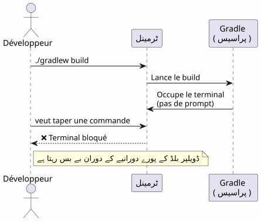
اکثر ڈویلپرز ایک نیو ٹرمنیل کھولتے ہیں۔ لیکن ایک زیادہ خوبصورت، تیزی سے اور نیٹیو حل موجود ہے: جوبز کی منیجمنٹ۔
تین ضروری کامینڈز
Ctrl+Z — متوقف کرنا (SIGTSTP)
`Ctrl+Z`سیگنال بھیجیں`SIGTSTP`امامی پروسیس تک. پروسیس ہےمعطل— نہیں مارا — اور ٹرمینل اپنی پرامپٹ پر واپس آ جاتا ہے.
$ ./gradlew build
> Building...
^Z
[1]+ Stoppé ./gradlew build
$کچ بریکٹس میں عدد`[1]`ہےجوب نمبر. Le `+`یہ ڈفلٹ جوب ظاہر کرتا ہے۔
fg —اگے لانا
`fg`یہ معلقہ جاب کو سامنے لاتا ہے۔عمل بالکل وہی سے دوبارہ شروع ہوتا ہے جہاں وہ روک دیا گیا تھا۔
$ fg
./gradlew build
> Building... (reprend où il en était)ایک مخصوص جاب نمبر :
$ fg %2bg — پس منظر میں جاری رکھیں
`bg`پروسس کو ٹرمینل بلاک کیے بغیر دوبارہ شروع کریں. لمبی بنائیوں کے لیے ایدیل۔
$ bg
[1]+ ./gradlew build &
$Le `&`آخر میں یہ مطلب ہے کہ پروسس بیک گراؤنڈ میں چل رہا ہے۔
jobs — شل کے جائزوں کی فہرست بنائیں
$ jobs
[1]- Stoppé vim README.md
[2]+ En cours ./gradlew build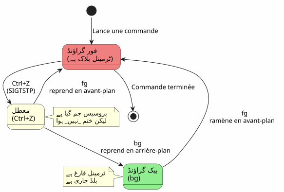
سيناريو 1 : لمبي بنائید
یہ استعمال کا سب سے عام مثال ہے۔ آپ گرائیڈل بِلڈ چلاتے ہیں، ٹرمنال مسدود ہو جاتا ہے، اور آپ کو کچھ اور کرنے کی ضرورت ہے۔
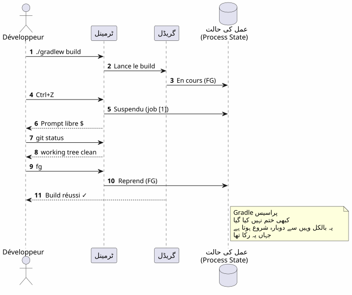
ایک قدم کے بعد ایک قدم
$ ./gradlew build
> Building...
^Z
[1]+ Stoppé ./gradlew build
$ git status
On branch main
nothing to commit, working tree clean
$ fg
./gradlew build
> Building...
BUILD SUCCESSFUL in 2m 34sسینیریو 2 : بھولا ہوا ایڈیٹر
آپ میں ہیں`vim`, آپ کو کسی اور فائل کو sans چھوڑ کر دیکھنے کی ضرورت ہے`vim`.
# Dans vim, en mode commande :
:shell
$ cat /path/to/other/file.txt
$ exit
# Retour dans vimلیکن یہ بھاری ہے. ساتھ`Ctrl+Z`, یہ فوری ہے :
# Dans vim, n'importe quel moment :
Ctrl+Z
[1]+ Stoppé vim README.md
$ cat /path/to/other/file.txt
# ... lire le fichier ...
$ fg
vim README.md
# Retour exact là où on en était, curseur en place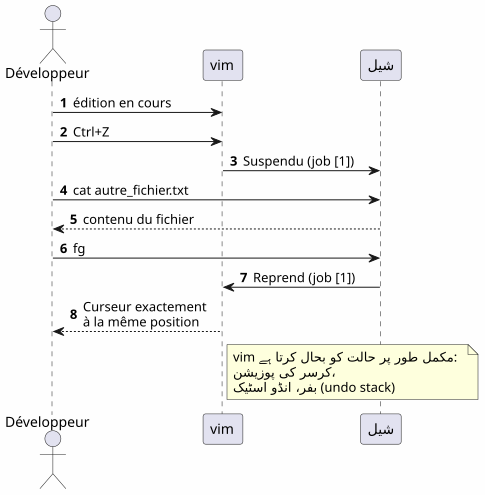
(Translation of empty French string is empty Urdu string, so output is nothing)`vim`بحالی کرتا ہے مکمل طور پر وس کی حالت بعد ایک`fg`کرسر کی جگہ، بفر کا مواد، انقلوب کی تاریخ — سب کچھ محفوظ ہے۔
سيناريو 3: عملية opencode معلقہ
یہ وہ سيناريو ہے جس نے اس مضافے کو محفز کیا۔ آپ استعمال کر رہے ہیں`opencode`(CLI ٹول آپ کے کوڈ پر LLM کو کنٹرول کرنے کے لیے), اور پروسس متوقف ہے۔
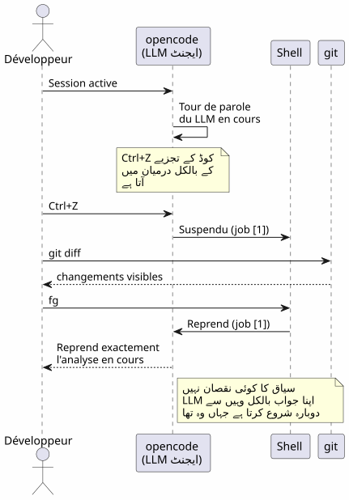
$ opencode
# ... session en cours, LLM analyse le code ...
^Z
[1]+ Stoppé opencode
$ git diff HEAD~1
# vérifier les changements récents
$ fg
opencode
# Le LLM reprend là où il s'était arrêtéفائدہ دوگنا :
-
سیاق و سباق کا کوئی نقصان نہیں: LLM سیشن، بات چیت کا تاریخ، کھُلی ہوئی فائلیں — سب چیز محفوظ رکھی گئی
-
ریستارت نہیں: opencode کو دوبارہچلانے کی ضرورت نہیں، کنٹیکس کو دوبارہ لوڈ کرنے کی ضرورت نہیں، LLM کو masalah کو دوبارہ وضاحت کرنے کی ضرورت نہیں
سيناريو 4 : ایک ساتھ چند جوبز کو منیج کرنا
fg et `bg`وہ کئی متوقف پروسیسز میں سے مخصوص پروسیس کو نشانہ بنانے کے لیے جوب نمبر قبول کرتے ہیں۔
$ vim config.yml
^Z
[1]+ Stoppé vim config.yml
$ ./gradlew test
^Z
[2]+ Stoppé ./gradlew test
$ htop
^Z
[3]+ Stoppé htop
$ jobs
[1] Stoppé vim config.yml
[2]- Stoppé ./gradlew test
[3]+ Stoppé htop
$ fg %2
./gradlew test
# Le build reprend en avant-plan
$ bg %3
[3] htop &
# htop reprend en arrière-plan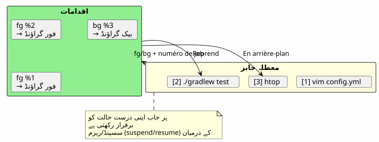
جوبز کے کمانڈز کا خلاصہ
| حکم | اثر | مثال |
|---|---|---|
|
سامنے کے پروسس کو معلاق کرو |
بھیجنا کا`SIGTSTP` |
|
ڈیفالٹ جاب کو فورگراؤنڈ میں دوبارہ لاؤ |
|
|
کام n کو سامنے میں دوبارہ شروع کیا جاتا ہے |
|
|
یہ پیشفرض کام پسزمینی میں دوبارہ شروع کرتا ہے |
|
|
نوکری n کو پیشزمینہ میں جاری رکھیں |
|
|
موجودہ شیل کے جابس کی فہرست بنائیں |
|
|
ن کا کام مکمل کریں |
|
fg, bg, Ctrl+Z, Ctrl+C اور & کے درمیان فرق
بہت سی ڈویلپر ان میکانزمز کو ایک دوسرے سے خلط کر دیتے ہیں۔ یہ ایک فیصلہ سازی کرنے والی وضاحت ہے۔
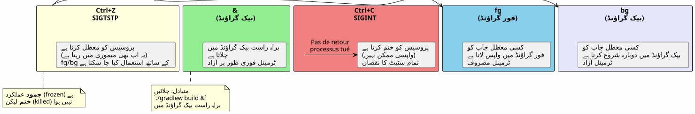
| شورتکٹ/کمانڈ | سگنال | اثر | واپس جائیں؟ |
|---|---|---|---|
|
|
پروسیس روک دیں (جمد، memori mein) |
ہاں :`fg` ou |
|
|
پروسيس کو قتل کریں (مکمل) |
نہیں : پروسس تباہ شدہ |
|
|
پروسيس کو قتل کریں + کور ڈامپ |
نہ : عمل متلف |
|
— |
بیک گراؤنڈ میں مستقیم چلائیں |
`fg`اس کو آگے لانا |
Ctrl+Z`ہےغیر-تخrierte. عمل مکمل طور پر منجمد ہے، جیسا ہے، ذِخْرَہ میں۔ آپ فوراً دوبارہ شروع کر سکتے ہیں ساتھ`fg. یہ ایک pause ہے، ایک stop نہیں۔
|
إیک جاب کا مکمل حیاتی دور
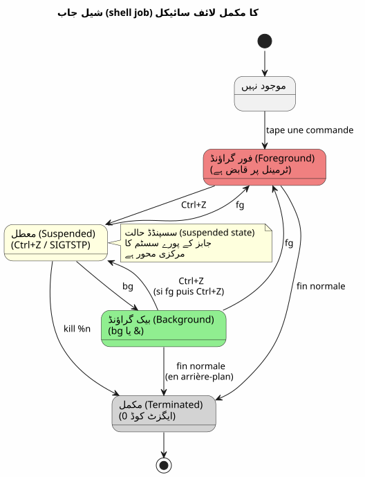
پیشگی نکات
fg سب سے حالیوں جوب اور تبدیلی کے ساتھ
fg`کسی استدلال کے بغیر مارک کردہ نوکری واپس لایا جاتا ہے+(سب سے تازہ). لیکن آپ بھی استعمال کر سکتے ہیں%-`پہلی نوکری ko هدف بنانے کے لیے :
$ vim file1.txt
^Z
[1]+ Stoppé vim file1.txt
$ vim file2.txt
^Z
[2]+ Stoppé vim file2.txt
$ fg # ramène job [2] (le plus récent)
$ fg %- # ramène job [1] (le précédent)ایک نوکری کو صاف ستھرا کر ختم کرنا
$ jobs
[1]- Stoppé vim config.yml
[2]+ Stoppé ./gradlew test
$ kill %2 # envoie SIGTERM au job 2
$ kill -9 %1 # envoie SIGKILL au job 1 (force)ڈساؤن : شیل سے الگ کرنا
disown`شل کی جوب ٹیبل سے ایک جوب ہٹا دیں۔ پروسیس چلتا رہتا ہے لیکن اب واپس نہیں لایا جا سکتا ساتھ`fg:
$ ./gradlew build &
[1] 12345
$ disown %1
# Le processus continue mais n'est plus lié au shell
# Ça survives à la fermeture du terminalنہاپ کے ساتھ لمبی پروسیسوں کو ملائیں
ایک پروسیسر کے ٹرمینال کی بند ہونے پر زندہ رہنے کے لیے :
$ nohup ./gradlew build &
[1] 12345
$ disown %1
# Le build continue même si vous fermez le terminal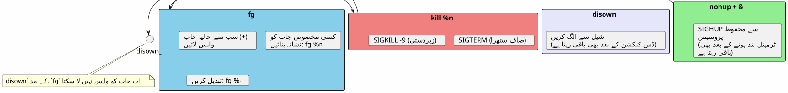
عام فخوں اور غلتیاں
Ctrl+Z اور Ctrl+C کو غلطی سے ملا دینا
یہ سب سے اکثر ہونے والی غلطی ہے.`Ctrl+C`یہ عمل کو قتل کرتا ہے۔`Ctrl+Z`اس کو سست کرتا ہے۔ اگر آپ دباؤ دیتے ہیں`Ctrl+C`عکس کے طور پر، ساری حالت ضائع ہو جاتی ہے — کھولے گئے فائلز، LLM سیشنز، جاری بنڈنگ۔
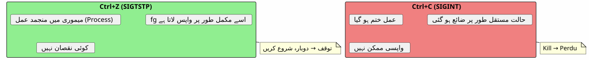
جوبز شیل میں مقامی ہیں
jobs, fg et `bg`وہ صرف اسی شیل میں کام کرتے ہیں جس نے ان پروسیسز کو چلایا ہے۔ اگر آپ نया ٹرمینل کھولیں گے تو آپ دوسرے کے جوبز نہیں دیکھ پائیں گے۔
# Terminal 1
$ vim file.txt
^Z
[1]+ Stoppé vim file.txt
# Terminal 2 (nouveau)
$ jobs
# (rien — les jobs sont locaux au shell)سیسٹم وسیع پروسیز دیکھنے کے لیے استعمال کریں`ps` ou htop:
ps aux | grep vimجوبز شیل کے بند ہونے پر بقی نہیں رہتے
اگر آپ ٹرمنل بند کر دیں، تو تمام سسپینڈ یا بیک گراؤنڈ جابس مٹا دیے جاتے ہیں۔ ایک پروسس کے بچنے کے لیے استعمال کریں`nohup`+disown :
$ nohup ./gradlew build &
[1] 12345
$ disown %1
# Fermer le terminal → le build continueانٹرایکٹو پروسیسز اور fg
کچھ تعاملی پروگرام ایک کے بعد اچھی طرح سے کام نہیں کرتے`Ctrl+Z`+fg. یہ کم ہوتا ہے، لیکن ہوتا ہے:
-
کسی پروگرام جو سیگنالات استعمال کرتے ہیں (vim, htop, less) اچھی طرح سے کام کرتے ہیں`Ctrl+Z`)
-
لمبی مدت تک چلنے والے نیٹ ورک کے پروگرام (ssh, opencode) عام طور پر درست انداز سے بازیاب ہو جاتے ہیں
-
جیسے پروگرام جو ٹرمینل کو تبدیل کرتے ہیں (ncurses) گاهی ٹرمینل کو غیر متوقع حالت میں چھوڑ دیتے ہیں
کروپٹ ٹرمینل کے بعد ایک`fg`, ٹائپ کریں :
resetخلاصہ ڈائگرام
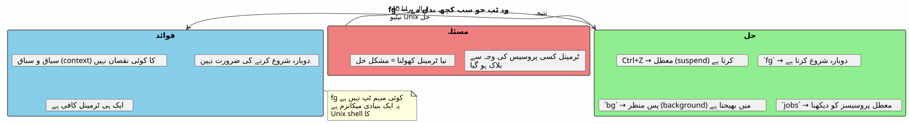
fg کم تر کمیت کیوں ہے
بیشتر مودرن ڈویلپرز کھوجتے ہیں`fg`دیر، یا کبھی نہیں۔ کئی دلائل:
-
IDE ٹرمینال چھپتے ہیںVS Code ایک انٹیگریٹڈ ٹرمینل پیش کرتا ہے، لیکن متعدد ٹابس بناتے ہیں`fg`ظاہراً کم ضروری
-
گرافیکی اوزار سی ایل آئی کی جگہ لے رہے ہیں: فائلز کے منیجرز، نظام کے مانیٹرز، گِٹ کے گرافیک کلائنٹس
-
tmux اور screenyah multiplexers یکساں masalah مختلف طریقے سے حل کرتے ہیں،磁器`fg`یہ آسان ہے اور ہمیشہ قابل دستیاب ہے
تاهم,`fg`ہے :
-
عالمیPOSIX شیلز (bash, zsh, fish…) میں موجود
-
غیر وابستہ: انسٹال کرنے کی ضرورت نہیں tmux یا screen
-
سنسپیشوٹ: دو ضربات`Ctrl+Z`پھر`fg`)متوقف کرنے اور دوبارہ شروع کرنے کے لیے
-
سیاق و سباق کا محافظ: عمل کی حالت سالم ہے
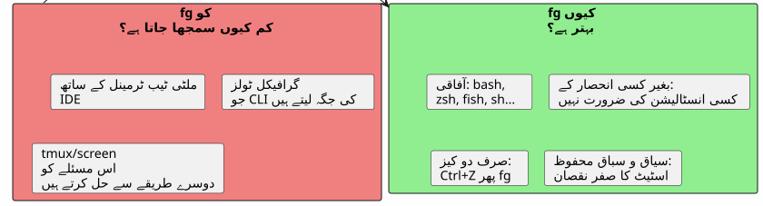
تکنیکی مذکرہ : سگنالات
مُتَجَسِّسوں کے لیے، یہ شامل سیگنالز :
| اشارہ | نام | بجائے بھیجا گیا | اثر |
|---|---|---|---|
2 |
|
|
انقطاع — عمل کو ختم کرتا ہے |
3 |
|
|
کور ڈمپ کے ساتھ خروج |
18 |
|
|
مفاعلی سٹاپ — عمل روک دیں |
19 |
|
|
جاری رکھے — متوقف عمل کو دوبارہ شروع کرتا ہے |
15 |
|
|
صاف اختتام |
9 |
|
|
مجبور خاتمہ (روکنا ناممکن) |
مکمل فلو :
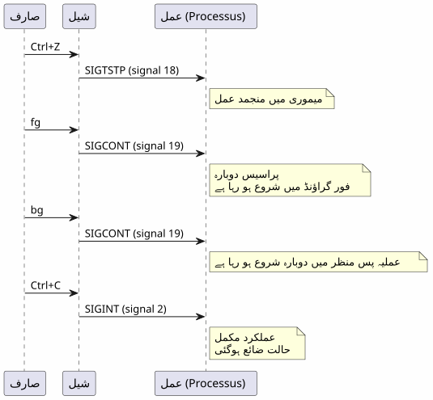
نتیجہ
`fg`یہ ایک مخفی tips نہیں — یہ یونیکس شیل کا بنیادی مکانیزم ہے، 1970 کے سالوں سے دستیاب ہے۔ حقیقت یہ کہ زیادہ تر ڈویلپر اسے نظرانداز کر رہے ہیں، ہماری دور کا ایک علامت ہے: IDE اور multiplexers نے ہمیں بنیادیوں سے door کر دیا۔
لیکن جب آپ ایک SSH سرور پر ہیں، ایک کم از کم ٹرمینل میں، یا صرف استعمال کر رہے ہیں`opencode`اور اس لئے LLM مکمل طور پر کام کر رہا ہے —Ctrl+Z, fg, bg, `jobs`آپ کے بہترین دوست ہیں
_ Ctrl+Z suspend, fg resume. یہ ٹرمینل کی pause-play ہے۔ _
حوالہ جات
-
man bash— بخش JOB CONTROL -
man signal— POSIX سیGNالہ کی فہرست